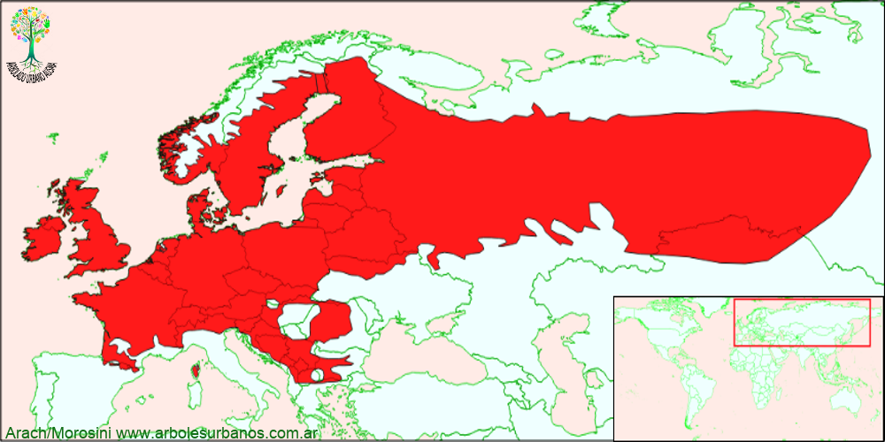

Click en las imágenes para ampliar

{kind=link}
{kind=link}
{kind=link}
{kind=link}
{kind=link}
{kind=link}
- NOMBRE CIENTÍFICO
- Betula pendula
- FAMILIA BOTÁNICA
- Betuláceas
- ORIGEN
- Tiene una gran área de dispersión natural desde las Islas Británicas y Península Ibérica en el este, hasta Asia menor por el oeste, su límite norte de distribución llega cerca del Círculo Polar Ártico, formando muchas veces bosques puros. Es una especie rústica, considerada pionera, esto es que coloniza lugares despoblados de árboles.
- DESCRIPCIÓN GENERAL
- Árbol que alcanza los 20 metros de altura, tiene una copa ovalada, con ramas principales dirigidas hacia arriba y las secundarias colgantes, lo que le da un aspecto flexible y pendular. De crecimiento rápido en los primeros años.
- USOS
- En su área de origen tiene diversas utilidades, desde pasta celulósica, hasta madera para construcción y torneado.
- REPRODUCCIÓN
- Se propaga mediante semillas, pero estas pierden su viabilidad en un corto lapso de tiempo.
- PARTICULARIDADES
- Debido su gran área de extensión pueden existir diferencias dentro de la misma especie. Algunas de ellas surgieron de manera espontánea y otras fueron creadas por el hombre, como por ejemplo: la forma “Purpúrea” que posee un follaje purpúreo intenso y su corteza joven tiene un tinte violáceo.
La corteza es blanca y lisa, (rasgo característico del género Betula) con lenticelas oscuras, horizontales en las plantas jóvenes. A medida que crece ésta se va agrietando longitudinalmente y se oscurece para terminar siendo rugosa y oscura en ejemplares maduros.
Posee hojas aovadas, ó triangulares, con borde doblemente dentado y ápice acuminado de hasta 6 cm. de largo y 4 cm. de ancho, de color verde oscuro en el haz y envés verde pálido. En época otoñal se tornan amarillas antes de caer.
Es una especie monoica, es decir que las flores masculinas y femeninas están en la misma planta, pero separadas. Las flores masculinas se muestran en amentos colgantes y las flores femeninas, también en amentos, que pueden ser erguidos ó péndulos.
Infrutescencia, cilíndricas, péndulas de 1 cm. de diámetro por 4 cm. de largo, que se desarma a principio de primavera, soltando semillas aladas de pequeño tamaño.